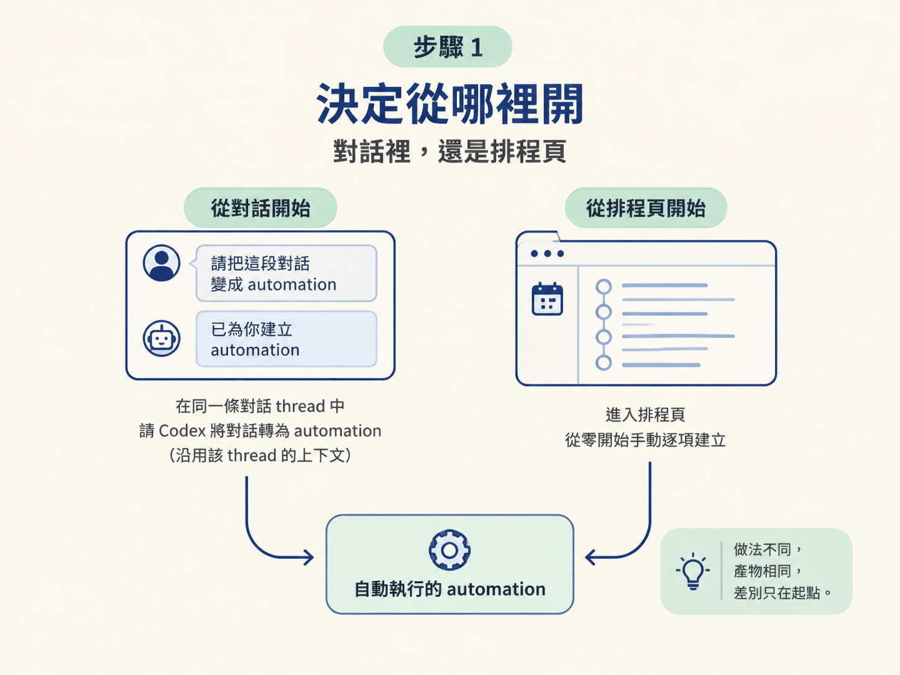
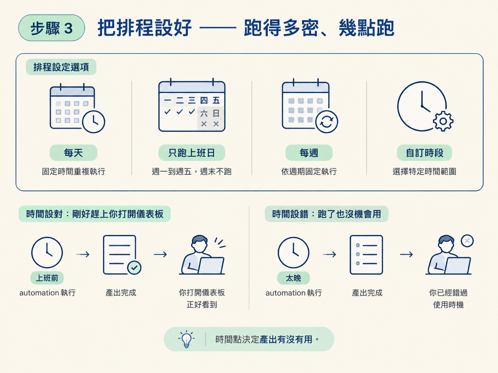
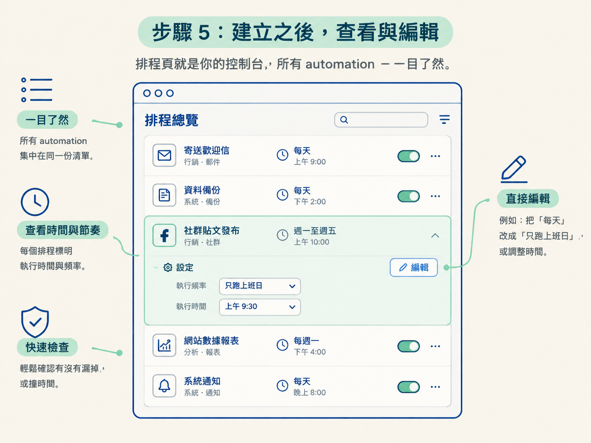

上一課確定了方向：automation 就是「一段 prompt 加一個排程」，讓你的 app 不用直連外部服務也能保持最新。但方向歸方向，真正卡住人的是操作層：你手上有一個想每天自動跑一次的任務，要怎麼把它變成一個真的會自己跑的 automation？
這一步做完，你會得到一個具體的東西：排程頁裡有一條你指定節奏與時間的 automation，時間一到自己執行，不用你手動觸發，也不用你記得。你還會知道事後要去哪裡查看它、怎麼改它。
建立 automation 只有兩個入口，選哪個取決於你當下人在哪裡：
兩種做法產出的 automation 是一樣的，差別只在起點。下面示範走第一條路，因為它最快：你出一張嘴，設定交給 Codex。

做法就是在目前這條 thread 裡，用一段話告訴 Codex 你要一個 automation。示範用的 prompt 是這樣寫的：
Can you create an automation in this thread to refetch the data
every day at 8:00 a.m. And then to update the site with the new
data and redeploy it?這段話看似隨口一提，其實三個必要資訊都塞在裡面了：
in this thread，綁在目前這條對話。every day at 8:00 a.m.，節奏與時間一次講清。refetch the data，然後更新網站並重新部署。你不需要把這三件事拆成好幾個步驟分別交代。一段話講完，Codex 會根據這條對話的上下文把其餘細節補齊。
若你的任務跟專案無關，也可以寫得更口語。例如這一句：
每個上班日早上 8:00，幫我做一份今天的 daily brief。送出之後，Codex 會在背景把 automation 建好。接著到排程頁確認它被建成什麼樣子，點開就能看到實際設定。
排程是 automation 的另一半，要決定的就是兩件事：頻率，和時間。可選的節奏有這些：
時間由你指定，這點比看起來重要。daily brief 排在上班前才有意義，資料刷新排在你會打開儀表板之前才有用。選錯時段，automation 還是會乖乖跑，只是跑出來的東西你根本沒機會用上。

建立時還有一個設定要選：這個 automation 是跑在原本那條對話裡，還是每次執行都開一條新對話。
這個選擇的判準下一課會單獨談，這裡先知道有這個選項、知道它會影響結果就夠了。
automation 不是建完就鎖死。你可以點開它看設定，也可以直接編輯：把「每天」改成「只跑上班日」、把時間往前提，都隨時改得了。
排程頁本身就是一個總覽，會把你所有會跑的 automation 列在同一份清單上，標明各自在什麼時間執行。等你累積了幾個 automation 之後，這裡就是你的控制台：想確認有沒有漏掉、有沒有撞時間，看這裡最快。

可以這樣驗證：你請 Codex 建好 automation 之後，到排程頁找它。它應該出現在清單裡，節奏與時間就是你指定的那組；時間一到，它會在你指定的那條對話（或一條新對話）裡跑起來，做你交代的那件事。全程不需手動觸發。
至於為什麼這樣設計有效、為什麼可以不用直連外部服務、plugin 在中間怎麼當橋樑，原理上一課講過了，這裡只專注把動作做完。
建立 automation 有兩個入口：在對話裡請 Codex 建，或到排程頁手動建。在對話裡只要一段話交代「在哪裡跑、多久跑、每次做什麼」，再把排程的節奏（每天／上班日／每週／自訂）與時間設好，時間一到它就會自動執行。建完可以點開查看、直接編輯，也能從排程頁一次看到所有會跑的 automation。
下一課處理建立時最容易被忽略、卻最影響結果的兩個選擇：該跑在原本的對話還是每次開一條新的，以及節奏該抓多密。這兩個選錯，automation 還是會跑，只是跑出來的東西可能不是你要的。